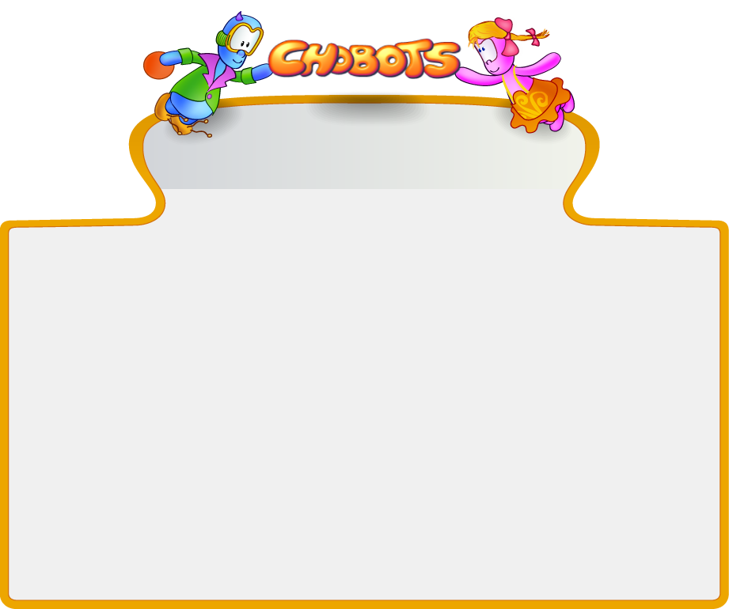

 YOUR MAGIC WORLD
play nowalfaversion
Game guide
Help
Гра «Чоботс» відбувається у місті на далекій планеті. Гравцю надається персонаж чобот, яким він буде грати. При реєстрації можна надати своє ім’я персонажу або придумати йому якесь чудернацьке. Також можна обрати колір, який матиме персонаж.
У грі можна заробляти гроші, граючись у одно та мультиплеєрні ігри. Витрачати гроші можна у різноманітних магазинах. Зокрема, гравець навідавшись до магазину Магічних предметів, може за бажанням стати прозорим чи супершвидким, а в магазині Одягу та аксесуарів надати своєму персонажу оригінального та модного вигляду.
Мультиплеєрні ігри чи міні-ігри заохочують дітей до знайомства. Чат допоможе вільно спілкуватися, адже у ньому є змога набирати власний текст. Виражати свої емоції або ставлення до друзів можна обираючи відповідні смайлики.
YOUR MAGIC WORLD
play nowalfaversion
Game guide
Help
Гра «Чоботс» відбувається у місті на далекій планеті. Гравцю надається персонаж чобот, яким він буде грати. При реєстрації можна надати своє ім’я персонажу або придумати йому якесь чудернацьке. Також можна обрати колір, який матиме персонаж.
У грі можна заробляти гроші, граючись у одно та мультиплеєрні ігри. Витрачати гроші можна у різноманітних магазинах. Зокрема, гравець навідавшись до магазину Магічних предметів, може за бажанням стати прозорим чи супершвидким, а в магазині Одягу та аксесуарів надати своєму персонажу оригінального та модного вигляду.
Мультиплеєрні ігри чи міні-ігри заохочують дітей до знайомства. Чат допоможе вільно спілкуватися, адже у ньому є змога набирати власний текст. Виражати свої емоції або ставлення до друзів можна обираючи відповідні смайлики. |